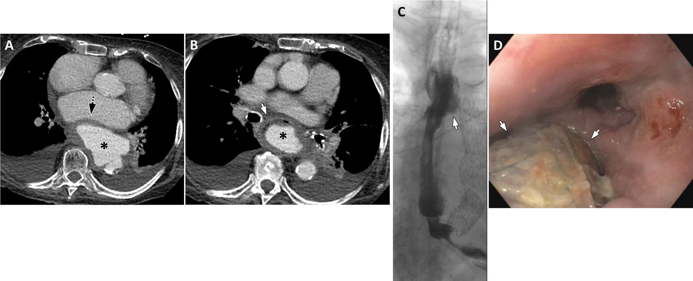
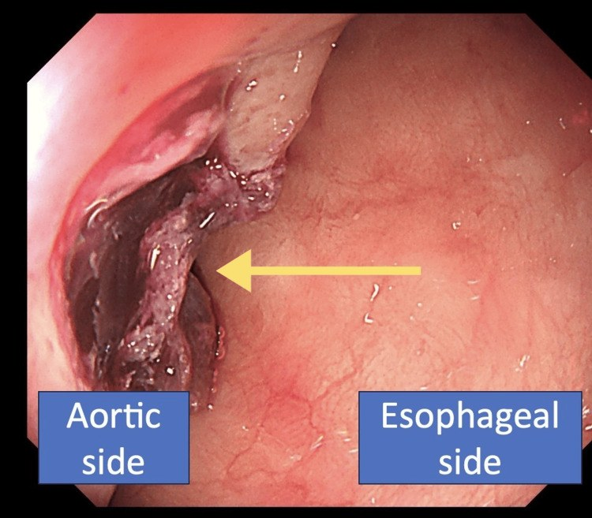
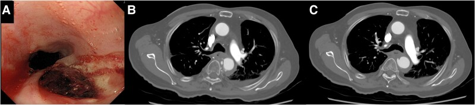
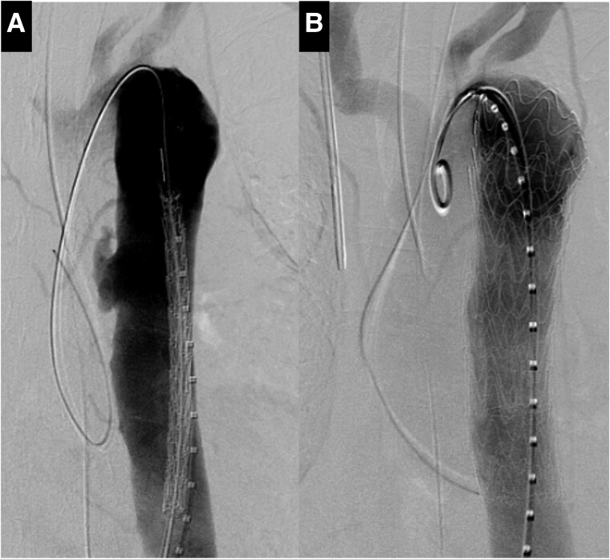
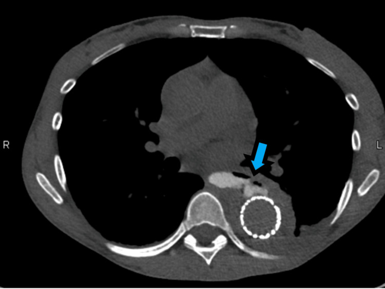

1852 — Rò động mạch chủ–thực quản (aortoesophageal fistula)
Tags: pattern:ro-mach-tieu-hoa pattern:gia-phinh-dong-mach-chu pattern:xuat-huyet-tieu-hoa pattern:ton-thuong-trong-truong-chieu vung:trung-that vung:thuc-quan protocol:CTA-nguc protocol:noi-soi-thuc-quan protocol:TEVAR score:Chiari score:CTCAE
Mức chắc chắn (certainty): tổng hợp y văn (literature synthesis) — số liệu từ 1 tổng quan hình ảnh rò động mạch chủ (Abdom Radiol 2026, PMC13672455), 1 đoàn hệ 21 ca mổ mở (JTCVS Tech 2026, PMC13673975), 1 đoàn hệ 17 ca quản lý đa chuyên khoa (JTCVS Tech 2025, PMC12683045), 1 loạt ca + tổng quan 272 ca (Cureus 2025, PMC12010216) và 3 ca nguyên văn có ảnh (PMC11630008, PMC12303019, PMC13518038). Không có thử nghiệm ngẫu nhiên; mọi con số sống còn là dữ liệu hồi cứu/đăng ký.
Câu chốt: AEF là "máu nhỏ rồi máu lớn" — herald bleed chỉ là màn dạo, khoảng yên lặng ngắn, rồi ồ ạt tử vong. Ba số phải thuộc: 0,27% ca mổ động mạch chủ và 0,15% ca xuất huyết tiêu hóa trên; tam chứng Chiari đầy đủ chỉ 18,1% (nên đừng chờ đủ bộ); và điều trị "bảo tồn" gần 100% tử vong, trong khi TEVAR đơn thuần tử vong 6 tháng 48,8% so với TEVAR + mổ thì hai 20,5%. Câu hỏi hình ảnh không phải "có máu trong dạ dày không" mà là "ĐMC có giả phình/loét sát thực quản và mất mặt phẳng mỡ không" — CTA trước, nội soi sau (nếu cần).
1. Tổng quan bệnh học – cơ chế hình ảnh (TẠI SAO)
1.1 Cơ chế: ĐMC "ăn" vào thực quản theo ba thì
- Thì 1 — thành ĐMC bị phá: phình ĐMC ngực, loét xuyên thành, nhiễm khuẩn mảnh ghép/stent-graft, chấn thương, dị vật, hoặc u/xạ. Thành ĐMC mỏng dần, viêm và hoại tử; nếu có nhiễm khuẩn, ổ mủ ăn mòn cả hai lớp.
- Thì 2 — thực quản bị chèn và thiếu máu: ĐMC giãn đập vào thực quản giữa (nơi ĐMC sát thực quản nhất, không có mô đệm), gây thiếu máu thành rồi hoại tử → dính và thủng. Vì vậy vị trí điển hình là thực quản giữa, ngang quai/ĐMC xuống.
- Thì 3 — máu vào lòng thực quản: lỗ rò nhỏ bị cục máu đông bít tạm → herald bleed (nôn máu nhỏ, ỉa phân đen); khi cục đông bong hoặc lỗ rò mở rộng → nôn máu ồ ạt, sốc, tử vong trong vài phút. Đây là lý do bệnh nhân "ổn định" có thể chết đột ngột trên giường.
- TẠI SAO CTA thấy được: lòng ĐMC ngấm thuốc mạnh, tổn thương thành (giả phình, loét, mất liên tục) tương phản rõ với mô trung thất; dấu gián tiếp quan trọng nhất là mất mặt phẳng mỡ giữa ĐMC và thực quản + dày thành thực quản/khi quản cạnh ĐMC. Dấu trực tiếp (thuốc từ ĐMC vào thực quản) chỉ thấy khi lỗ rò đang mở — CTA âm không loại trừ.
1.2 Ngưỡng định lượng trụ cột
| Đại lượng | Con số | Nguồn |
|---|---|---|
| Tần suất trong mọi ca mổ động mạch chủ (cơ sở dữ liệu toàn quốc Nhật) | 0,27% | PMC13673975 |
| Tần suất trong xuất huyết tiêu hóa trên | 0,15% | PMC13673975 |
| AEF thứ phát (sau can thiệp/mổ ĐMC) trong nhóm xuất huyết tiêu hóa | ~2% | PMC13673975 |
| Tam chứng Chiari đầy đủ (đau ngực + herald bleed + nôn máu ồ ạt) | 18,1% (48/265) | PMC12010216 |
| Triệu chứng chính | nôn máu 83% (226/272); sốc 45,5% (122/268); đau ngực/bụng/lưng 37,9%; sốt 25,1% | PMC12010216 |
| Nguyên nhân (60 ca): dị vật · TEVAR · phình ĐMC · ung thư thực quản | 23,3% · 21,7% · 18,3% · 10% | PMC12010216 |
| Tử vong không can thiệp | 76% (tổng quan); "bảo tồn" ~100% | PMC13672455; PMC12683045 |
| TEVAR đơn thuần — tử vong 6 tháng | 48,8% (so với 20,5% nếu TEVAR + mổ thì hai) | PMC12683045 |
| Chỉ đặt stent thực quản — sống 1 năm | 17% | PMC12683045 |
| Mổ mở triệt để — tử vong trong viện | 19,0% (4/21); sống 10 năm 38,4%; không tái nhiễm 89,7% | PMC13673975 |
| Nhóm quản lý đa chuyên khoa (17 ca, 12 ca mổ) — tử vong trong viện | 8% | PMC12683045 |
| 30% ca nôn máu nhỏ ban đầu | tiến triển nôn máu ồ ạt tử vong trong 6 giờ nếu chẩn đoán chậm | PMC12010216 |
| Độ nhạy chẩn đoán | CTA tới 93%; nội soi 25–80% | PMC12010216 |
| PET-CT cho nhiễm mảnh ghép ĐMC | độ nhạy 95%, độ đặc hiệu 80% | PMC13672455 |
1.3 Vì sao "herald bleed" bị bỏ sót
- Máu nhỏ, tự cầm, bệnh nhân tỉnh táo → chẩn đoán hay bị quy cho loét dạ dày, Mallory–Weiss, vỡ mạch máu nhỏ; nội soi có thể chỉ thấy vết loét/khối dưới niêm mạc ở thực quản (dạng SET-like) — dễ sinh thiết hoặc bỏ qua.
- Khoảng yên lặng trung bình vài giờ đến vài ngày — không có "dấu hiệu vàng" nào báo trước cơn chảy máu chết người ngoài tổn thương ĐMC trên CTA.
2. Mẫu hình + chẩn đoán phân biệt theo vị trí (Gamut)
2.1 Theo bối cảnh
- Nguyên phát (không có can thiệp ĐMC trước): phình ĐMC ngực/loét xuyên thành (người già, tăng huyết áp), dị vật (xương cá, pin cúc áo, dị vật kim loại), ung thư thực quản xâm lấn, lao/nhiễm khuẩn (phình nhiễm khuẩn), xạ trị (AEF có thể xuất hiện 19 năm sau xạ — PMC11630008).
- Thứ phát: sau TEVAR/mổ ghép ĐMC, nhiễm mảnh ghép; sau đốt điện tim (catheter ablation); sau đặt stent thực quản (stent ăn mòn vào ĐMC); sau mổ thực quản (rò miệng nối → nhiễm trung thất → ăn mòn ĐMC).
- Vị trí: thực quản giữa (quai/ĐMC xuống) là điển hình; tổn thương ở thực quản cổ gợi ý dị vật/ung thư; ở thực quản dưới gợi ý phình hoành/loét.
2.2 Mẫu hình hình ảnh
- Giả phình/loét xuyên thành ĐMC sát thực quản, mất mặt phẳng mỡ giữa hai cấu trúc, thành thực quản dày hoặc khuyết thành.
- Khí quanh ĐMC/mảnh ghép (nhiễm mảnh ghép), máu tụ trung thất, tràn dịch màng phổi trái.
- Cản quang uống thoát vào ĐMC (dấu trực tiếp, hiếm): chỉ thấy khi lỗ rò lớn; không dùng barium khi nghi rò.
- Nội soi: vết loét/khối dưới niêm mạc ở thực quản giữa, có cục máu đông, mạch đập thấy qua hoặc lưới stent-graft lộ trong lòng — không sinh thiết, không bơm hơi mạnh.
3. Bảng so sánh phân biệt (ma trận đối chiếu)
| Thực thể (entity) | Hình ảnh điển hình | Chốt vào (rule-in) | Chốt loại (rule-out) | Gợi ý xác nhận |
|---|---|---|---|---|
| Rò ĐMC–thực quản (AEF) | Giả phình/loét xuyên thành sát thực quản, mất mặt phẳng mỡ, thành thực quản dày/khuyết; máu tụ trung thất | Herald bleed + tổn thương ĐMC sát thực quản trên CTA | ĐMC bình thường, không mất mặt phẳng mỡ → chưa loại trừ nếu lỗ rò bị bít | CTA ngực khẩn; nội soi có kiểm soát |
| Vỡ phình ĐMC vào trung thất (không rò thực quản) | Máu tụ trung thất lớn, tràn máu màng phổi, không có máu trong lòng thực quản | Sốc + đau lưng + máu tụ trung thất | Nôn máu tươi lượng lớn, nội soi thấy máu trong thực quản → nghĩ AEF | CTA; nội soi thận trọng |
| Rò ĐMC–phế quản (ABF) | Khí quanh mảnh ghép, phế quản ngoại vi giãn, ho ra máu | Ho ra máu tái diễn + tiền sử mổ/xạ ĐMC | Nôn máu (tiêu hóa) → nghĩ AEF | CTA + nội soi phế quản |
| Loét/Dieulafoy thực quản–dạ dày | Ổ loét nông, mạch máu lộ, không tổn thương ĐMC | Nội soi thấy mạch máu/ổ loét + CTA ĐMC bình thường | Tổn thương ĐMC sát thực quản → nghĩ AEF | Nội soi + CTA |
| Giãn tĩnh mạch thực quản | Nhiều búi giãn dọc thực quản, xơ gan, tăng áp cửa | Xơ gan + búi giãn + nôn máu | Không giãn tĩnh mạch, có tổn thương ĐMC → nghĩ AEF | Nội soi; CTA nếu nghi |
| Mallory–Weiss | Rách dọc tại ranh giới thực quản–dạ dày sau nôn | Nôn dữ dội rồi nôn máu + rách dọc | Tổn thương ĐMC + máu đỏ tươi ồ ạt không do nôn → nghĩ AEF | Nội soi |
| Ung thư thực quản chảy máu | Khối loét lớn, hẹp lòng, hạch; không giả phình ĐMC | Khối u + hạch + không tổn thương ĐMC | Giả phình/loét ĐMC → nghĩ AEF | Nội soi + sinh thiết (nếu không nghi AEF) + CTA |
| Thủng thực quản (Boerhaave) có máu tụ | Khí–dịch trung thất, tràn khí màng phổi, không tổn thương ĐMC | Nôn dữ dội + khí trung thất + sốt | Có giả phình ĐMC + máu ồ ạt → nghĩ AEF | Cản quang nước + CT |

(A, B) CTA ngực: phình dạng túi lớn của ĐMC ngực xuống (*), chèn ép nhĩ trái (mũi tên chấm) và thực quản (mũi tên trắng), mất mặt phẳng mỡ giữa ĐMC và thực quản; tràn dịch màng phổi hai bên ít. (C) Cản quang sau đặt stent ĐMC + stent thực quản: thuốc vẫn thoát ra tại lỗ rò (mũi tên). (D) Nội soi sau rút stent thực quản: lỗ rò còn, thấy lưới stent ĐMC trong lòng. Nguồn: Agarwal D et al.; Abdom Radiol 2026; Fig. 7 — PMC13672455, CC BY.3.1 Đọc CTA theo thứ tự "3 lớp"
- Lòng ĐMC: giả phình, loét xuyên thành, huyết khối trong lòng, mất liên tục thành; đo đường kính túi phình và vị trí so với thực quản.
- Khoảng giữa ĐMC–thực quản: mặt phẳng mỡ còn hay mất, dày mô mềm, khí (nhiễm), máu tụ.
- Thực quản và trung thất: thành dày/khuyết, khí trong trung thất, tràn dịch/tràn khí màng phổi, đông đặc phổi do hít máu.
4. Protocol chụp + ngưỡng xử trí
4.1 Chẩn đoán: CTA là cửa đầu tiên
- CTA ngực–bụng thì động mạch, lát 0,6–1 mm, ECG-gating nếu tổn thương ở gốc/quai; tái dựng MPR cong dọc ĐMC và MPR vuông góc tại điểm sát thực quản.
- Không dùng barium khi nghi rò — nếu cần cản quang thực quản, dùng thuốc tan trong nước.
- Nội soi: chỉ khi đã có CTA và có kế hoạch can thiệp; dùng CO₂, bơm tối thiểu, không sinh thiết, không nong; chuẩn bị sẵn bóng chèn (Sengstaken–Blakemore) và phương án chuyển mổ.
- PET-CT: chỉ để đánh giá nhiễm mảnh ghép (Se 95%, Sp 80%), không dùng cấp cứu.
4.2 Cấp cứu và chiến lược điều trị
- Hồi sức: 2 đường truyền lớn, truyền máu khối lượng lớn (MTP), PPI, tránh hạ huyết áp; đặt nội khí quản nếu cần bảo vệ đường thở.
- Cầm máu tạm: bóng chèn thực quản (Sengstaken–Blakemore) hoặc bóng chèn dạ dày–thực quản — cầu nối, không phải điều trị triệt để.
- TEVAR (stent-graft phủ) thì cấp: cầm máu nhanh, cầu nối; nhưng không xử lý ổ nhiễm → nếu chỉ TEVAR, tử vong 6 tháng 48,8%.
- Mổ triệt để thì hai: cắt thực quản + tái tạo ĐMC (in-situ graft/extra-anatomic bypass) + quấn mạc nối lớn, kháng sinh dài ngày; tử vong trong viện 19% ở trung tâm chuyên sâu, không tái nhiễm 89,7% ở 10 năm.
- Stent thực quản đơn thuần: không đủ — sống 1 năm 17%; chỉ dùng che rò tạm/palliative khi không mổ được.
- Theo dõi sau can thiệp: CTA 1 tháng, sau đó 3–6 tháng/lần trong năm đầu; PET-CT nếu sốt dai dẳng; nội soi khi nuốt khó (hẹp/stent di trú).
flowchart TD
A[Nôn máu + đau ngực sau một đợt máu nhỏ] --> B[CTA ngực thì động mạch]
B --> C{Tổn thương ĐMC sát thực quản}
C -->|Có giả phình loét mất mặt phẳng mỡ| D[AEF: hồi sức + bóng chèn]
C -->|Không rõ nhưng lâm sàng mạnh| E[CTA lặp + nội soi CO2 tối thiểu]
D --> F[TEVAR cầu nối]
F --> G[Mổ thì hai: cắt thực quản + tái tạo ĐMC + mạc nối]
G --> H[Kháng sinh dài ngày + CTA theo dõi]
E --> I{Thấy lỗ rò hay máu trong thực quản}
I -->|Có| D
I -->|Không| J[Tìm nguyên nhân khác: loét, giãn tĩnh mạch, Mallory-Weiss]
4.3 Phân tầng và tiên lượng
- Không can thiệp: gần 100% tử vong — không có "theo dõi bảo tồn" ở bệnh nhân còn chỉ định can thiệp.
- Chỉ TEVAR: cầm máu được nhưng ổ nhiễm còn → tái phát/giả phình nhiễm; tử vong 6 tháng 48,8%.
- TEVAR + mổ thì hai: tử vong 6 tháng 20,5% — chiến lược ưu tiên ở bệnh nhân đủ sức mổ.
- Chỉ stent thực quản/palliative: sống 1 năm 17% — dành cho ca không mổ được.
5. Biến thể bình thường và cạm bẫy
- Herald bleed bị quy cho loét/Mallory–Weiss: nôn máu nhỏ + đau ngực/lưng ở người có phình ĐMC = AEF cho đến khi loại trừ; 30% tiến triển tử vong trong 6 giờ.
- Nội soi bình thường không loại trừ: độ nhạy chỉ 25–80%; tổn thương có thể là khối dưới niêm mạc (SET-like) — không sinh thiết khi nghi AEF.
- Bơm hơi khi nội soi có thể bong cục đông và gây chảy máu ồ ạt tại bàn soi — dùng CO₂, bơm tối thiểu, có bóng chèn sẵn.
- CTA âm không loại trừ: cục đông bít lỗ rò; nếu lâm sàng mạnh → CTA lặp thì muộn hoặc nội soi có kiểm soát.
- AEF muộn sau TEVAR/xạ: có thể nhiều năm (ca 19 năm sau xạ — PMC11630008); sốt + nuốt đau + máu nhỏ ở người có stent-graft = nhiễm mảnh ghép/rò cho đến khi loại trừ.
- Nhầm với ABF: ho ra máu = rò ĐMC–phế quản (bài 086); nôn máu = rò ĐMC–thực quản — cùng cơ chế, khác đường thoát.
- "Stent thực quản là xong": che được lỗ rò nhưng không xử lý ổ nhiễm, có thể ăn mòn thêm vào ĐMC; sống 1 năm chỉ 17%.
- Bỏ sót tổn thương ĐMC trên CT không cản quang: luôn chụp CTA khi nghi, không dùng CT thường/X-quang để loại trừ.

Nội soi thực quản: vết rách niêm mạc kèm cục máu đông và lỗ nghi rò (bên phải là lòng thực quản, bên trái sát ĐMC) — hình ảnh "bắt chước" một vết loét đơn thuần; chẩn đoán xác định bằng CTA. Nguồn: Kobayashi M et al.; Cureus 2025; Fig. 3 — PMC12010216, CC BY.6. Tự lượng giá — Blind Quiz
Ca 1 — Nữ 89 tuổi, nuốt khó + xuất huyết tiêu hóa trên. CTA, cản quang sau can thiệp và nội soi:
- Câu hỏi: (1) Dấu hiệu nào trên CTA gợi AEF? (2) Vì sao vẫn còn thoát cản quang sau đặt stent? (3) Bước tiếp theo?
Bấm để hiện đáp án (findings + chẩn đoán)
- Findings: (A, B) phình dạng túi lớn ĐMC ngực xuống, chèn ép thực quản, mất mặt phẳng mỡ giữa ĐMC và thực quản, tràn dịch màng phổi ít. (C) Sau stent ĐMC + stent thực quản, cản quang vẫn thoát ra tại lỗ rò. (D) Nội soi sau rút stent: lỗ rò còn, thấy lưới stent-graft ĐMC.
- Chẩn đoán: AEF do phình ĐMC. Đặt stent thực quản không bịt kín và không xử lý ổ nhiễm → cần TEVAR + mổ triệt để thì hai (cắt thực quản + tái tạo ĐMC + mạc nối), kháng sinh dài ngày.
- Nguồn ảnh: Agarwal D et al.; Abdom Radiol 2026; Fig. 7 — PMC13672455, CC BY.
Ca 2 — Nam 84 tuổi, nôn máu ồ ạt, tiền sử xạ ung thư thực quản 19 năm trước. Nội soi + CT, rồi chụp mạch trước/sau TEVAR:


- Câu hỏi: (1) Ổ loét ở thực quản giữa gợi ý gì khi ĐMC nằm sát? (2) Vì sao không sinh thiết ổ loét? (3) Hình mạch máu cho thấy gì?
Bấm để hiện đáp án
- Findings: (A) nội soi: ổ loét thực quản giữa; (B, C) CT: cùng vùng thực quản nằm sát ĐMC ngực, thành dày, mất mặt phẳng mỡ. Chụp mạch: (A) bất thường/bờ nham nhở của ĐMC xuống tại lỗ rò; (B) sau TEVAR không còn thoát thuốc (không endoleak).
- Chẩn đoán: AEF muộn sau xạ (19 năm). Không sinh thiết vì có thể mở lỗ rò và gây chảy máu không cầm được; xác định bằng CTA/chụp mạch.
- Xử trí: TEVAR cầm máu thì cấp → đánh giá mổ triệt để (cắt thực quản + tái tạo ĐMC); theo dõi nhiễm stent-graft (sốt, khí quanh stent).
- Nguồn ảnh: Sakakibara S, Marumoto A; Eur Heart J Case Rep 2024; Fig. 1 & 2 — PMC11630008, CC BY.
Ca 3 — Nam 49 tuổi, bóc tách ĐMC type B, đã TEVAR; sốt, nôn máu. CT cản quang thực quản:

- Câu hỏi: (1) Thuốc cản quang đi đâu? (2) Chẩn đoán? (3) Vì sao "chỉ theo dõi" là sai?
Bấm để hiện đáp án
- Findings: cản quang trong lòng thực quản thông với lòng giả (false lumen) của ĐMC ngực sau TEVAR — lỗ rò thực quản–ĐMC.
- Chẩn đoán: AEF thứ phát sau TEVAR (trên nền bóc tách type B). Đây là biến chứng nhiễm trung thất + rò — không tự lành.
- Vì sao sai: "bảo tồn" gần 100% tử vong; TEVAR đơn thuần 6 tháng 48,8%; cần chiến lược thì hai (cầm máu + cắt thực quản/tái tạo ĐMC) và kháng sinh dài.
- Nguồn ảnh: Gordon RS et al.; Cureus 2025; Fig. 3 — PMC12303019, CC BY.
Bài liên quan chéo
- 1844 – Rò và hoại tử thực quản do xạ (cùng trường xạ; rò trung thất/khí quản)
- 086 – Rò động mạch chủ–phế quản (cùng cơ chế, biểu hiện ho ra máu)
- 938 – Rò động mạch chủ–ruột (AEF ở tầng bụng, biểu hiện ỉa máu)
- 091 – Ho ra máu ồ ạt & nút mạch động mạch phế quản (xử trí chảy máu ồ ạt)
- 1851 – Hẹp thực quản lành tính sau xạ (biến chứng muộn cùng vùng)
Không dùng để chẩn đoán độc lập khi chưa có người hướng dẫn.